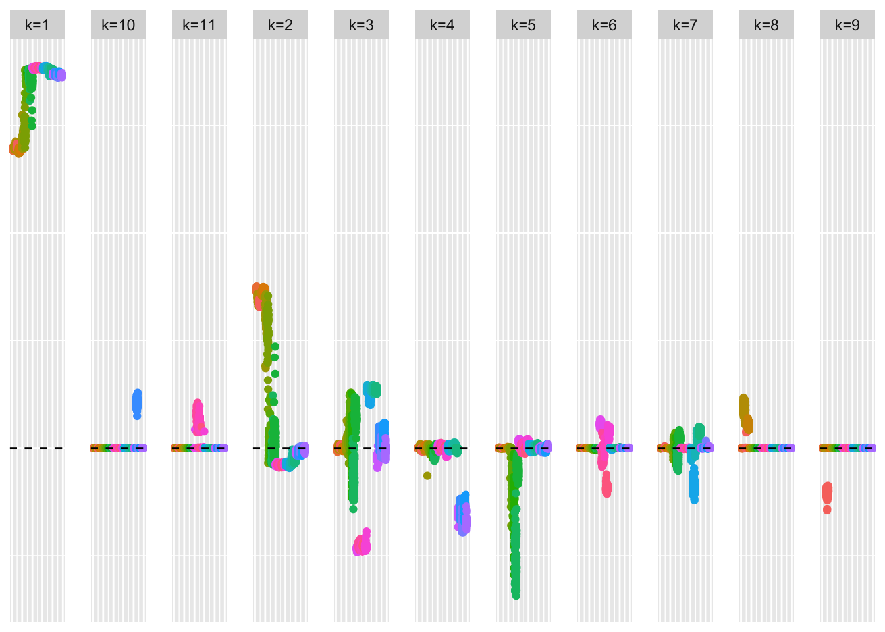
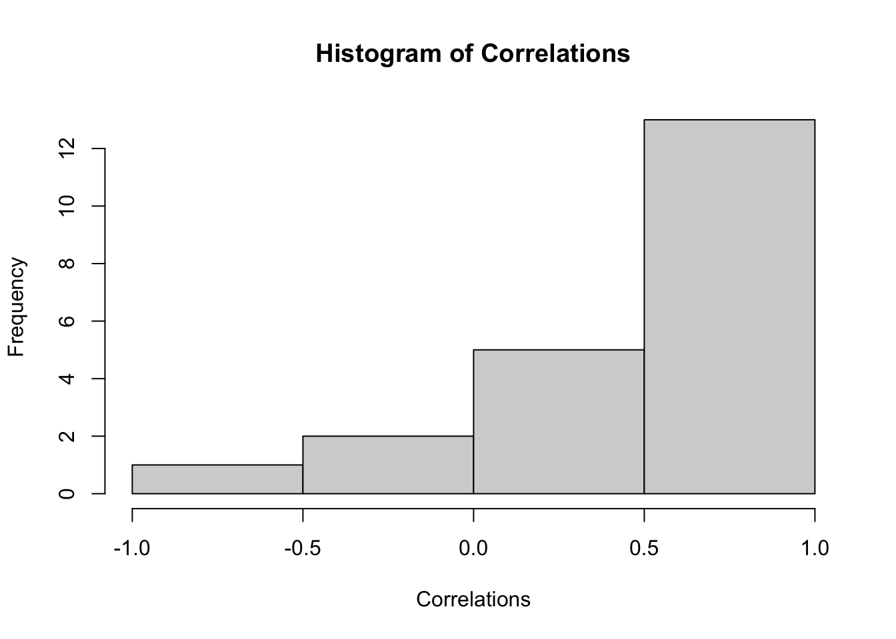
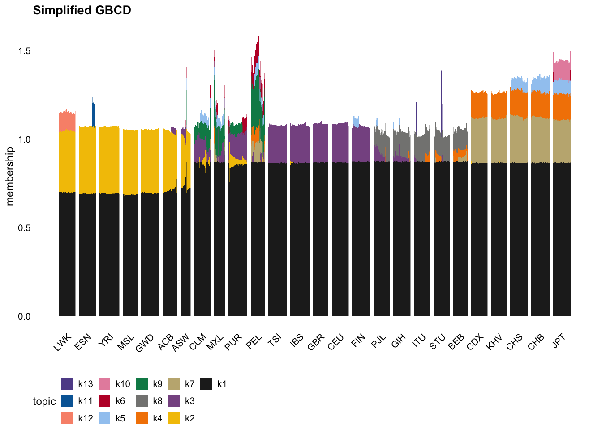
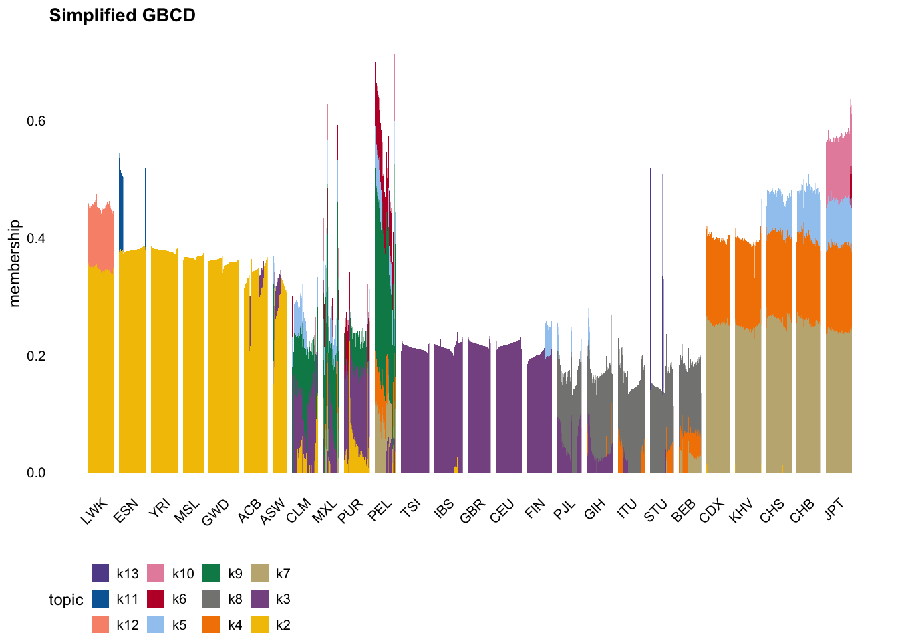
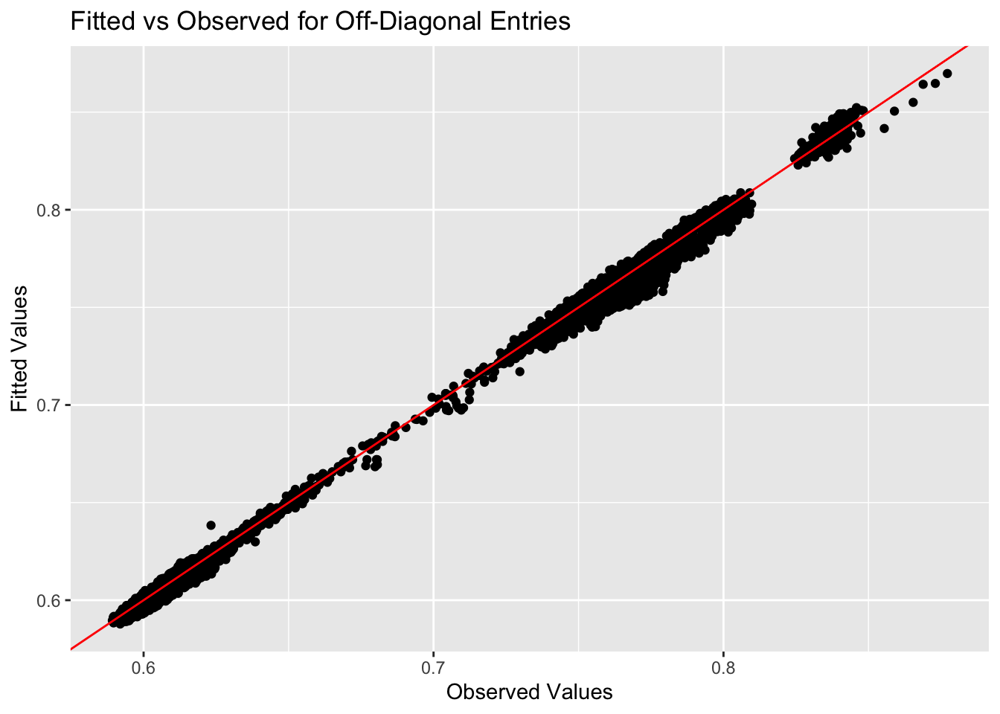
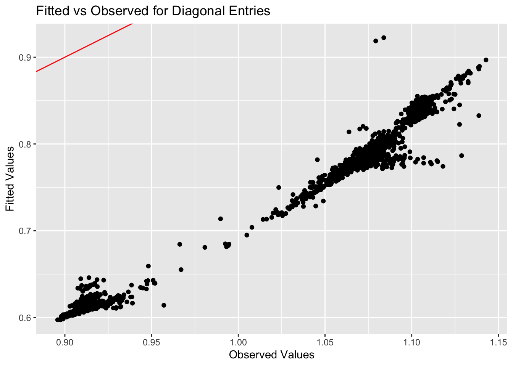

Last updated: 2025-10-31
Checks: 7 0
Knit directory: tgp_analysis/
This reproducible R Markdown analysis was created with workflowr (version 1.7.2). The Checks tab describes the reproducibility checks that were applied when the results were created. The Past versions tab lists the development history.
Great! Since the R Markdown file has been committed to the Git repository, you know the exact version of the code that produced these results.
Great job! The global environment was empty. Objects defined in the global environment can affect the analysis in your R Markdown file in unknown ways. For reproduciblity it’s best to always run the code in an empty environment.
The command set.seed(20251005) was run prior to running
the code in the R Markdown file. Setting a seed ensures that any results
that rely on randomness, e.g. subsampling or permutations, are
reproducible.
Great job! Recording the operating system, R version, and package versions is critical for reproducibility.
Nice! There were no cached chunks for this analysis, so you can be confident that you successfully produced the results during this run.
Great job! Using relative paths to the files within your workflowr project makes it easier to run your code on other machines.
Great! You are using Git for version control. Tracking code development and connecting the code version to the results is critical for reproducibility.
The results in this page were generated with repository version 351499c. See the Past versions tab to see a history of the changes made to the R Markdown and HTML files.
Note that you need to be careful to ensure that all relevant files for
the analysis have been committed to Git prior to generating the results
(you can use wflow_publish or
wflow_git_commit). workflowr only checks the R Markdown
file, but you know if there are other scripts or data files that it
depends on. Below is the status of the Git repository when the results
were generated:
Ignored files:
Ignored: .DS_Store
Ignored: .Rhistory
Ignored: data/.DS_Store
Untracked files:
Untracked: analysis/gbcd_stability_selection_analysis.Rmd
Untracked: analysis/simplified_gbcd_binormal.Rmd
Untracked: analysis/simplified_gbcd_ptexp.Rmd
Untracked: analysis/simplified_gbcd_with_extrapolation.Rmd
Unstaged changes:
Modified: analysis/simplified_gbcd_with_diagonal_analysis.Rmd
Note that any generated files, e.g. HTML, png, CSS, etc., are not included in this status report because it is ok for generated content to have uncommitted changes.
These are the previous versions of the repository in which changes were
made to the R Markdown
(analysis/simplified_gbcd_analysis.Rmd) and HTML
(docs/simplified_gbcd_analysis.html) files. If you’ve
configured a remote Git repository (see ?wflow_git_remote),
click on the hyperlinks in the table below to view the files as they
were in that past version.
| File | Version | Author | Date | Message |
|---|---|---|---|---|
| Rmd | 351499c | Annie Xie | 2025-10-31 | Update simplified gbcd analysis |
| html | b05d0f4 | Annie Xie | 2025-10-22 | Build site. |
| Rmd | ffecc49 | Annie Xie | 2025-10-22 | Update simplified gbcd analysis |
| html | 1abc1a3 | Annie Xie | 2025-10-20 | Build site. |
| Rmd | a68010c | Annie Xie | 2025-10-20 | Change correlation threshold in simplified gbcd analysis |
| html | 6114ba2 | Annie Xie | 2025-10-08 | Build site. |
| Rmd | b256d9a | Annie Xie | 2025-10-08 | Update simplified gbcd analysis |
| html | 0a1cb3a | Annie Xie | 2025-10-06 | Build site. |
| Rmd | c9fef87 | Annie Xie | 2025-10-06 | Add simplified gbcd analysis |
The aim of this vignette is to illustrate how to use
flashier to obtain a decomposition of the 1000 Genomes
Phase 3 dataset.
We begin by loading the necessary packages. We also set the seed so that results can be fully reproduced.
library(flashier)
library(ashr)
library(ebnm)
library(Matrix)
library(pheatmap)
library(ggplot2)
library(fastTopics)
library(cowplot)
set.seed(3)source('code/visualization_functions.R')In this vignette, we will be working with the 1000 Genomes Project Phase 3 dataset. We started with the ADMIXTURE analysis dataset from the flagship paper, 1000 Genomes Project Consortium et al. 2015; the data can be found here. This dataset contains genotype information for 2,504 individuals from 26 populations and 193,634 SNPs. The paper states that in the preparation of this dataset, variants with a minor allele frequency of less than 0.05 were filtered out and the genome was thinned to decrease the effect of linkage disequilibrium.
Furthermore, we filtered out SNPs for which we had no ancestral allele information; ancestral allele information was obtained from the “2016-05-05 primary release (build 37, 2504 samples)” files downloaded from here. This reduced the number of SNPs to 185,116. We then re-coded the data matrix to be counts of derived alleles. From the individual by SNP data matrix \(X\), we computed the scaled Gram matrix, \(S = \frac{1}{p}XX'\) where \(p\) is the number of SNPs.
We load in the scaled Gram matrix.
S <- readRDS('data/tgp_cov_matrix.rds')We also load in the meta data which contains population information for each sample.
tgp_meta <- readRDS('data/tgp_meta.rds')The samples come from 26 populations, which are grouped into 5 super-populations.
summary(tgp_meta$pop)LWK ESN YRI MSL GWD ACB ASW CLM MXL PUR PEL TSI IBS GBR CEU FIN PJL GIH ITU STU
99 99 108 85 113 96 61 94 64 104 85 107 107 91 99 99 96 103 102 102
BEB CDX KHV CHS CHB JPT
86 93 99 105 103 104 summary(tgp_meta$super_pop) Length Class Mode
2504 character character Now, we use the R package flashier to apply a simplified
version of GBCD on the 1000 Genomes Project data. This is broken down
into several steps.
Step 1: Fit a point-Laplace EBMF fit to the scaled Gram matrix
First, we use flashier to fit \(S \approx L \tilde{L}'\) with
point-Laplace priors over the columns of \(L\) and \(\tilde{L}\). Note that because \(S\) is symmetric, we expect \(L \approx \tilde{L}\).
start_time <- Sys.time()
tgp_cov_fit <- flash_init(data = S) |>
flash_set_verbose(2) |>
flash_greedy(Kmax = 11, ebnm_fn = ebnm::ebnm_point_laplace) |>
flash_backfit(extrapolate = TRUE, warmstart = TRUE, maxiter = 500)Adding factor 1 to flash object...
Optimizing factor...
Factor successfully added. Objective: 12345425.462
Adding factor 2 to flash object...
Optimizing factor...
Factor successfully added. Objective: 16794025.382
Adding factor 3 to flash object...
Optimizing factor...
Factor successfully added. Objective: 21452511.969
Adding factor 4 to flash object...
Optimizing factor...
Factor successfully added. Objective: 22347650.651
Adding factor 5 to flash object...
Optimizing factor...
Factor successfully added. Objective: 22976960.439
Adding factor 6 to flash object...
Optimizing factor...
Factor successfully added. Objective: 23000794.743
Adding factor 7 to flash object...
Optimizing factor...
Factor successfully added. Objective: 23014990.146
Adding factor 8 to flash object...
Optimizing factor...
Factor successfully added. Objective: 23026470.100
Adding factor 9 to flash object...
Optimizing factor...
Factor successfully added. Objective: 23031547.371
Adding factor 10 to flash object...
Optimizing factor...
Factor successfully added. Objective: 23035454.208
Adding factor 11 to flash object...
Optimizing factor...
Factor successfully added. Objective: 23036843.713
Wrapping up...
Done.
Backfitting 11 factors (tolerance: 9.34e-02)...
Difference between iterations is within 1.0e+04...
Difference between iterations is within 1.0e+03...
Difference between iterations is within 1.0e+02...
Difference between iterations is within 1.0e+01...
Difference between iterations is within 1.0e+00...
Difference between iterations is within 1.0e-01...
Backfit complete. Objective: 23134110.435
Wrapping up...
Done.Note that Kmax = 11 forces this initialization step to
fit no more than 11 factors. However, it is possible for the final fit
to have more than 11 factors (The number of factors in the final fit
will be no more than 2*Kmax). It is recommended to set
Kmax to a larger value rather than a smaller one.
This is a visualization of the point-Laplace fit loadings:
tgp_cov_fit_ptlaplace_scaled <- ldf(tgp_cov_fit, 'i')This is a scatterplot of the factors in \(L\):
plot_loadings(tgp_cov_fit_ptlaplace_scaled$L %*% diag(sqrt(tgp_cov_fit_ptlaplace_scaled$D)), tgp_meta$pop, legendYN = FALSE)
This is a scatterplot of the factors in \(\tilde{L}\):
plot_loadings(tgp_cov_fit_ptlaplace_scaled$F %*% diag(sqrt(tgp_cov_fit_ptlaplace_scaled$D)), tgp_meta$pop, legendYN = FALSE)Step 2: Split the factors into positive and negative components
Now, we split the factors from the flash fit into its positive and negative components. In particular, we construct the matrices \[\hat{L}_{nonneg} = \big[ \max\{\hat{L}, 0_{N \times K}\}, \ \max\{-\hat{L}, 0_{N \times K} \} \big]\] \[\hat{\tilde{L}}_{nonneg} = \big[ \max\{\hat{\tilde{L}}, 0_{N \times K}\}, \ \max\{-\hat{\tilde{L}}, 0_{N \times K} \} \big]\]
split_pt_laplace_estimates <- function(cov_fit){
# S is the scaled Gram matrix
# cov_fit is a flash object
LL <- cov_fit$L_pm
FF <- cov_fit$F_pm
# split into positive and negative components
LL <- cbind(pmax(LL, 0), pmax(-LL, 0))
FF <- cbind(pmax(FF, 0), pmax(-FF, 0))
# remove columns of zeros
LL.idx.nonzero <- apply(LL, 2, function(x){return(sum(x^2))}) > 10^(-10)
FF.idx.nonzero <- apply(FF, 2, function(x){return(sum(x^2))}) > 10^(-10)
LL <- LL[, LL.idx.nonzero]
FF <- FF[, FF.idx.nonzero]
# refit weights by least squares
# n <- nrow(S)
# lft_vec <- matrix(rep(0, ncol(LL)*n*n), ncol = ncol(LL))
# for (i in 1:ncol(LL)){
# lft_vec[,i] <- c(LL[,i]%*%t(FF[,i]))
# }
#
# nnlm_fit <- NNLM::nnlm(lft_vec, as.matrix(c(S), ncol = 1), alpha = c(0,0,0))
#
# indices_keep <- (nnlm_fit$coefficients > 0)
# LL_scaled <- LL[,indices_keep] %*% diag(sqrt(nnlm_fit$coefficients[indices_keep]))
# FF_scaled <- FF[,indices_keep] %*% diag(sqrt(nnlm_fit$coefficients[indices_keep]))
return(list(LL, FF))
}pt_laplace_split_initialization <- split_pt_laplace_estimates(tgp_cov_fit)Step 3: Fit a generalized-binary EBMF fit to the scaled Gram matrix
Now, we use flashier to fit \(S \approx L \tilde{L}'\) with
generalized-binary priors over the columns of \(L\) and \(\tilde{L}\). We initialize this fit with
\(\hat{L}_{nonneg}\) and \(\hat{\tilde{L}}_{nonneg}\), constructed in
the previous step.
start_time <- Sys.time()
tgp_cov_gb_fit <- flash_init(data = S) |>
flash_set_verbose(2) |>
flash_factors_init(pt_laplace_split_initialization, ebnm_fn = ebnm::ebnm_generalized_binary) |>
flash_backfit(extrapolate = FALSE, warmstart = TRUE, maxiter = 200)Backfitting 21 factors (tolerance: 9.34e-02)...
An update to factor 9 decreased the objective by 3.453e-01.
An update to factor 18 decreased the objective by 9.536e+02.
An update to factor 21 decreased the objective by 9.101e-01.
An update to factor 9 decreased the objective by 1.033e+00.
An update to factor 9 decreased the objective by 7.825e-01.
An update to factor 21 decreased the objective by 3.764e-01.
Difference between iterations is within 1.0e+05...
An update to factor 9 decreased the objective by 4.421e-01.
An update to factor 21 decreased the objective by 2.741e-01.
An update to factor 18 decreased the objective by 4.717e-02.
An update to factor 21 decreased the objective by 3.085e-04.
An update to factor 9 decreased the objective by 1.106e+00.
An update to factor 18 decreased the objective by 2.492e-02.
An update to factor 21 decreased the objective by 2.161e+00.
An update to factor 9 decreased the objective by 8.437e-01.
An update to factor 21 decreased the objective by 2.603e-04.
Difference between iterations is within 1.0e+04...
An update to factor 9 decreased the objective by 1.175e+00.
An update to factor 18 decreased the objective by 1.104e-01.
An update to factor 21 decreased the objective by 7.967e-01.
An update to factor 9 decreased the objective by 7.804e-01.
An update to factor 18 decreased the objective by 1.187e-01.
An update to factor 21 decreased the objective by 2.321e+00.
An update to factor 9 decreased the objective by 9.673e-01.
An update to factor 18 decreased the objective by 1.226e-01.
An update to factor 21 decreased the objective by 1.972e+00.
An update to factor 9 decreased the objective by 9.469e-01.
An update to factor 18 decreased the objective by 1.246e-01.
An update to factor 21 decreased the objective by 4.285e+00.
An update to factor 9 decreased the objective by 7.373e-01.
An update to factor 18 decreased the objective by 1.241e-01.
An update to factor 21 decreased the objective by 2.009e+00.
An update to factor 9 decreased the objective by 6.432e-01.
An update to factor 18 decreased the objective by 8.814e-02.
An update to factor 21 decreased the objective by 6.869e+00.
An update to factor 9 decreased the objective by 3.241e-07.
An update to factor 18 decreased the objective by 3.805e-03.
An update to factor 21 decreased the objective by 6.452e+00.
An update to factor 9 decreased the objective by 2.082e-06.
An update to factor 21 decreased the objective by 6.830e+00.
Difference between iterations is within 1.0e+03...
An update to factor 9 decreased the objective by 2.272e-01.
An update to factor 18 decreased the objective by 3.502e-03.
An update to factor 21 decreased the objective by 2.349e+00.
An update to factor 9 decreased the objective by 3.674e-01.
An update to factor 18 decreased the objective by 4.425e-03.
An update to factor 21 decreased the objective by 2.538e+00.
An update to factor 9 decreased the objective by 2.713e-01.
An update to factor 18 decreased the objective by 6.407e-03.
An update to factor 21 decreased the objective by 2.433e+00.
An update to factor 9 decreased the objective by 2.487e-01.
An update to factor 18 decreased the objective by 8.057e-03.
An update to factor 21 decreased the objective by 2.585e-01.
An update to factor 9 decreased the objective by 2.201e-01.
An update to factor 18 decreased the objective by 9.676e-03.
An update to factor 21 decreased the objective by 2.383e-01.
An update to factor 9 decreased the objective by 1.940e-01.
An update to factor 18 decreased the objective by 1.142e-02.
An update to factor 21 decreased the objective by 2.355e+00.
An update to factor 9 decreased the objective by 1.656e-01.
An update to factor 18 decreased the objective by 1.302e-02.
An update to factor 21 decreased the objective by 2.408e-01.
An update to factor 9 decreased the objective by 1.475e-01.
An update to factor 18 decreased the objective by 1.462e-02.
An update to factor 21 decreased the objective by 2.389e-01.
An update to factor 9 decreased the objective by 1.286e-01.
An update to factor 18 decreased the objective by 1.600e-02.
An update to factor 21 decreased the objective by 6.767e+00.
An update to factor 9 decreased the objective by 1.212e-01.
An update to factor 18 decreased the objective by 1.724e-02.
An update to factor 21 decreased the objective by 2.279e-01.
An update to factor 9 decreased the objective by 1.214e-01.
An update to factor 18 decreased the objective by 1.852e-02.
An update to factor 21 decreased the objective by 2.191e-01.
An update to factor 9 decreased the objective by 9.720e-02.
An update to factor 18 decreased the objective by 1.996e-02.
An update to factor 21 decreased the objective by 1.881e-01.
An update to factor 9 decreased the objective by 1.233e-01.
An update to factor 18 decreased the objective by 2.157e-02.
An update to factor 20 decreased the objective by 9.426e-05.
An update to factor 21 decreased the objective by 1.216e-01.
An update to factor 9 decreased the objective by 1.155e-01.
An update to factor 18 decreased the objective by 2.296e-02.
An update to factor 20 decreased the objective by 1.115e-04.
An update to factor 21 decreased the objective by 1.494e-01.
An update to factor 9 decreased the objective by 1.209e-01.
An update to factor 18 decreased the objective by 2.499e-02.
An update to factor 20 decreased the objective by 7.716e-05.
An update to factor 21 decreased the objective by 1.675e-01.
An update to factor 9 decreased the objective by 1.167e-01.
An update to factor 18 decreased the objective by 2.725e-02.
An update to factor 20 decreased the objective by 5.257e-05.
An update to factor 21 decreased the objective by 1.435e-01.
An update to factor 9 decreased the objective by 9.850e-02.
An update to factor 18 decreased the objective by 2.866e-02.
An update to factor 20 decreased the objective by 3.558e-05.
An update to factor 21 decreased the objective by 1.306e-01.
An update to factor 9 decreased the objective by 8.961e-02.
An update to factor 18 decreased the objective by 2.816e-02.
An update to factor 20 decreased the objective by 2.198e-05.
An update to factor 21 decreased the objective by 3.049e-04.
An update to factor 9 decreased the objective by 1.075e-01.
An update to factor 18 decreased the objective by 1.645e-02.
An update to factor 20 decreased the objective by 1.212e-05.
An update to factor 21 decreased the objective by 4.176e+00.
Difference between iterations is within 1.0e+02...
An update to factor 9 decreased the objective by 1.020e-01.
An update to factor 20 decreased the objective by 9.269e-06.
An update to factor 21 decreased the objective by 5.485e-02.
An update to factor 9 decreased the objective by 6.967e-02.
An update to factor 20 decreased the objective by 1.454e-05.
An update to factor 21 decreased the objective by 3.051e-04.
An update to factor 20 decreased the objective by 5.614e-06.
An update to factor 21 decreased the objective by 3.050e-04.
An update to factor 9 decreased the objective by 3.077e-04.
An update to factor 20 decreased the objective by 8.509e-06.
An update to factor 21 decreased the objective by 3.049e-04.
An update to factor 9 decreased the objective by 2.199e-03.
An update to factor 20 decreased the objective by 1.461e-05.
An update to factor 21 decreased the objective by 3.052e-04.
An update to factor 9 decreased the objective by 1.777e-03.
An update to factor 20 decreased the objective by 2.009e-05.
An update to factor 21 decreased the objective by 3.048e-04.
An update to factor 9 decreased the objective by 3.586e-03.
An update to factor 20 decreased the objective by 2.864e-05.
An update to factor 21 decreased the objective by 3.049e-04.
An update to factor 9 decreased the objective by 6.380e-04.
An update to factor 20 decreased the objective by 4.013e-05.
An update to factor 21 decreased the objective by 3.049e-04.
An update to factor 20 decreased the objective by 5.049e-05.
An update to factor 21 decreased the objective by 3.046e-04.
An update to factor 9 decreased the objective by 4.997e-03.
An update to factor 20 decreased the objective by 6.015e-05.
An update to factor 21 decreased the objective by 3.050e-04.
An update to factor 9 decreased the objective by 7.583e-03.
An update to factor 18 decreased the objective by 3.819e-03.
An update to factor 20 decreased the objective by 6.179e-05.
An update to factor 21 decreased the objective by 3.051e-04.
An update to factor 9 decreased the objective by 7.736e-03.
An update to factor 18 decreased the objective by 1.036e-01.
An update to factor 20 decreased the objective by 6.699e-05.
An update to factor 21 decreased the objective by 3.047e-04.
An update to factor 9 decreased the objective by 8.060e-03.
An update to factor 18 decreased the objective by 1.454e-02.
An update to factor 20 decreased the objective by 7.977e-05.
An update to factor 21 decreased the objective by 3.049e-04.
An update to factor 9 decreased the objective by 8.064e-03.
An update to factor 18 decreased the objective by 1.466e-03.
An update to factor 20 decreased the objective by 9.522e-05.
An update to factor 21 decreased the objective by 3.050e-04.
An update to factor 9 decreased the objective by 7.889e-03.
An update to factor 20 decreased the objective by 1.123e-04.
An update to factor 21 decreased the objective by 3.050e-04.
An update to factor 9 decreased the objective by 8.058e-03.
An update to factor 20 decreased the objective by 1.284e-04.
An update to factor 21 decreased the objective by 3.050e-04.
An update to factor 9 decreased the objective by 8.450e-03.
An update to factor 20 decreased the objective by 1.447e-04.
An update to factor 21 decreased the objective by 3.047e-04.
An update to factor 9 decreased the objective by 8.908e-03.
An update to factor 20 decreased the objective by 1.630e-04.
An update to factor 21 decreased the objective by 3.050e-04.
An update to factor 9 decreased the objective by 6.314e-03.
An update to factor 20 decreased the objective by 1.827e-04.
An update to factor 21 decreased the objective by 3.050e-04.
An update to factor 9 decreased the objective by 3.651e-03.
An update to factor 20 decreased the objective by 2.046e-04.
An update to factor 21 decreased the objective by 3.047e-04.
An update to factor 9 decreased the objective by 5.008e-03.
An update to factor 20 decreased the objective by 2.280e-04.
An update to factor 21 decreased the objective by 3.640e-02.
An update to factor 9 decreased the objective by 6.899e-03.
An update to factor 20 decreased the objective by 2.459e-04.
An update to factor 21 decreased the objective by 3.048e-04.
An update to factor 9 decreased the objective by 6.266e-03.
An update to factor 20 decreased the objective by 2.658e-04.
An update to factor 21 decreased the objective by 3.344e+00.
An update to factor 9 decreased the objective by 6.123e-03.
An update to factor 20 decreased the objective by 2.674e-04.
An update to factor 21 decreased the objective by 3.047e-04.
An update to factor 9 decreased the objective by 5.855e-03.
An update to factor 18 decreased the objective by 7.506e-03.
An update to factor 20 decreased the objective by 2.922e-04.
An update to factor 21 decreased the objective by 3.049e-04.
An update to factor 9 decreased the objective by 7.364e-03.
An update to factor 20 decreased the objective by 3.141e-04.
An update to factor 21 decreased the objective by 3.298e+00.
An update to factor 20 decreased the objective by 3.251e-04.
An update to factor 21 decreased the objective by 3.050e-04.
An update to factor 9 decreased the objective by 6.577e-03.
An update to factor 18 decreased the objective by 3.270e-03.
An update to factor 20 decreased the objective by 3.364e-04.
An update to factor 21 decreased the objective by 3.050e-04.
An update to factor 9 decreased the objective by 1.473e-02.
An update to factor 20 decreased the objective by 3.577e-04.
An update to factor 21 decreased the objective by 3.047e-04.
An update to factor 9 decreased the objective by 9.951e-03.
An update to factor 18 decreased the objective by 2.053e-03.
An update to factor 20 decreased the objective by 3.806e-04.
An update to factor 21 decreased the objective by 3.047e-04.
An update to factor 9 decreased the objective by 6.174e-03.
An update to factor 18 decreased the objective by 6.423e-03.
An update to factor 20 decreased the objective by 4.034e-04.
An update to factor 21 decreased the objective by 3.047e-04.
An update to factor 9 decreased the objective by 3.233e-03.
An update to factor 18 decreased the objective by 9.059e-03.
An update to factor 20 decreased the objective by 4.261e-04.
An update to factor 21 decreased the objective by 3.051e-04.
An update to factor 9 decreased the objective by 5.339e-03.
An update to factor 20 decreased the objective by 4.504e-04.
An update to factor 21 decreased the objective by 3.050e-04.
An update to factor 9 decreased the objective by 7.201e-03.
An update to factor 20 decreased the objective by 4.774e-04.
An update to factor 21 decreased the objective by 4.798e-02.
An update to factor 9 decreased the objective by 1.031e-02.
An update to factor 20 decreased the objective by 5.070e-04.
An update to factor 21 decreased the objective by 3.050e-04.
An update to factor 9 decreased the objective by 4.273e-03.
An update to factor 20 decreased the objective by 5.247e-04.
An update to factor 21 decreased the objective by 3.045e-04.
An update to factor 20 decreased the objective by 5.461e-04.
An update to factor 21 decreased the objective by 3.049e-04.
An update to factor 20 decreased the objective by 5.696e-04.
An update to factor 21 decreased the objective by 3.040e-04.
An update to factor 20 decreased the objective by 5.928e-04.
An update to factor 21 decreased the objective by 3.046e-04.
An update to factor 9 decreased the objective by 1.573e-03.
An update to factor 20 decreased the objective by 6.162e-04.
An update to factor 21 decreased the objective by 3.050e-04.
An update to factor 9 decreased the objective by 1.892e-03.
An update to factor 20 decreased the objective by 6.389e-04.
An update to factor 21 decreased the objective by 3.048e-04.
An update to factor 9 decreased the objective by 2.532e-03.
An update to factor 20 decreased the objective by 6.603e-04.
An update to factor 21 decreased the objective by 3.049e-04.
An update to factor 9 decreased the objective by 2.349e-03.
An update to factor 20 decreased the objective by 6.794e-04.
An update to factor 21 decreased the objective by 3.047e-04.
An update to factor 9 decreased the objective by 9.154e-03.
An update to factor 20 decreased the objective by 6.987e-04.
An update to factor 21 decreased the objective by 2.510e-02.
An update to factor 9 decreased the objective by 1.093e-02.
An update to factor 20 decreased the objective by 7.177e-04.
An update to factor 21 decreased the objective by 3.050e-04.
An update to factor 9 decreased the objective by 1.091e-02.
An update to factor 20 decreased the objective by 7.342e-04.
An update to factor 21 decreased the objective by 3.051e-04.
An update to factor 9 decreased the objective by 8.015e-03.
An update to factor 20 decreased the objective by 7.472e-04.
An update to factor 21 decreased the objective by 3.049e-04.
An update to factor 9 decreased the objective by 7.270e-03.
An update to factor 20 decreased the objective by 7.588e-04.
An update to factor 21 decreased the objective by 3.047e-04.
An update to factor 9 decreased the objective by 9.828e-03.
An update to factor 20 decreased the objective by 7.698e-04.
An update to factor 21 decreased the objective by 3.049e-04.
An update to factor 9 decreased the objective by 9.447e-03.
An update to factor 20 decreased the objective by 7.796e-04.
An update to factor 21 decreased the objective by 3.051e-04.
An update to factor 9 decreased the objective by 1.206e-02.
An update to factor 20 decreased the objective by 7.891e-04.
An update to factor 21 decreased the objective by 3.051e-04.
An update to factor 9 decreased the objective by 1.198e-02.
An update to factor 20 decreased the objective by 7.966e-04.
An update to factor 21 decreased the objective by 3.050e-04.
An update to factor 9 decreased the objective by 1.084e-02.
An update to factor 20 decreased the objective by 8.028e-04.
An update to factor 21 decreased the objective by 3.049e-04.
An update to factor 9 decreased the objective by 1.052e-02.
An update to factor 20 decreased the objective by 8.084e-04.
An update to factor 21 decreased the objective by 3.050e-04.
An update to factor 9 decreased the objective by 1.053e-02.
An update to factor 20 decreased the objective by 8.128e-04.
An update to factor 21 decreased the objective by 3.051e-04.
An update to factor 9 decreased the objective by 1.037e-02.
An update to factor 20 decreased the objective by 8.168e-04.
An update to factor 21 decreased the objective by 3.844e-02.
An update to factor 9 decreased the objective by 1.065e-02.
An update to factor 20 decreased the objective by 8.199e-04.
An update to factor 21 decreased the objective by 3.815e-02.
An update to factor 9 decreased the objective by 1.061e-02.
An update to factor 20 decreased the objective by 8.200e-04.
An update to factor 21 decreased the objective by 3.050e-04.
An update to factor 9 decreased the objective by 9.144e-03.
An update to factor 20 decreased the objective by 8.193e-04.
An update to factor 21 decreased the objective by 3.051e-04.
An update to factor 9 decreased the objective by 7.514e-03.
An update to factor 20 decreased the objective by 8.205e-04.
An update to factor 21 decreased the objective by 3.050e-04.
An update to factor 9 decreased the objective by 3.143e-02.
An update to factor 20 decreased the objective by 8.197e-04.
An update to factor 21 decreased the objective by 2.992e-04.
An update to factor 9 decreased the objective by 1.365e-02.
An update to factor 20 decreased the objective by 8.169e-04.
An update to factor 21 decreased the objective by 3.050e-04.
An update to factor 9 decreased the objective by 6.193e-03.
An update to factor 20 decreased the objective by 8.139e-04.
An update to factor 21 decreased the objective by 3.472e-02.
An update to factor 9 decreased the objective by 6.218e-03.
An update to factor 20 decreased the objective by 8.096e-04.
An update to factor 21 decreased the objective by 3.051e-04.
An update to factor 9 decreased the objective by 5.948e-03.
An update to factor 20 decreased the objective by 8.058e-04.
An update to factor 21 decreased the objective by 3.051e-04.
An update to factor 9 decreased the objective by 6.346e-03.
An update to factor 20 decreased the objective by 8.007e-04.
An update to factor 21 decreased the objective by 3.050e-04.
An update to factor 9 decreased the objective by 6.084e-03.
An update to factor 20 decreased the objective by 7.952e-04.
An update to factor 21 decreased the objective by 3.051e-04.
An update to factor 9 decreased the objective by 6.218e-03.
An update to factor 20 decreased the objective by 7.889e-04.
An update to factor 21 decreased the objective by 3.050e-04.
An update to factor 9 decreased the objective by 6.413e-03.
An update to factor 20 decreased the objective by 7.816e-04.
An update to factor 21 decreased the objective by 1.021e-02.
An update to factor 9 decreased the objective by 6.447e-03.
An update to factor 20 decreased the objective by 7.729e-04.
An update to factor 21 decreased the objective by 3.051e-04.
An update to factor 9 decreased the objective by 6.373e-03.
An update to factor 20 decreased the objective by 7.663e-04.
An update to factor 21 decreased the objective by 3.051e-04.
An update to factor 9 decreased the objective by 6.805e-03.
An update to factor 20 decreased the objective by 7.588e-04.
An update to factor 21 decreased the objective by 3.050e-04.
An update to factor 9 decreased the objective by 6.370e-03.
An update to factor 20 decreased the objective by 7.506e-04.
An update to factor 21 decreased the objective by 3.051e-04.
An update to factor 9 decreased the objective by 6.028e-03.
An update to factor 20 decreased the objective by 7.419e-04.
An update to factor 21 decreased the objective by 3.051e-04.
An update to factor 9 decreased the objective by 5.754e-03.
An update to factor 20 decreased the objective by 7.324e-04.
An update to factor 21 decreased the objective by 3.051e-04.
An update to factor 9 decreased the objective by 6.099e-03.
An update to factor 20 decreased the objective by 7.225e-04.
An update to factor 21 decreased the objective by 3.443e-02.
An update to factor 9 decreased the objective by 6.186e-03.
An update to factor 20 decreased the objective by 7.112e-04.
An update to factor 21 decreased the objective by 3.051e-04.
An update to factor 9 decreased the objective by 5.939e-03.
An update to factor 20 decreased the objective by 7.001e-04.
An update to factor 21 decreased the objective by 3.051e-04.
An update to factor 9 decreased the objective by 5.868e-03.
An update to factor 20 decreased the objective by 6.892e-04.
An update to factor 21 decreased the objective by 3.051e-04.
An update to factor 9 decreased the objective by 5.826e-03.
An update to factor 20 decreased the objective by 6.779e-04.
An update to factor 21 decreased the objective by 3.051e-04.
An update to factor 9 decreased the objective by 5.729e-03.
An update to factor 20 decreased the objective by 6.662e-04.
An update to factor 21 decreased the objective by 3.051e-04.
An update to factor 9 decreased the objective by 6.058e-03.
An update to factor 20 decreased the objective by 6.541e-04.
An update to factor 21 decreased the objective by 3.050e-04.
An update to factor 9 decreased the objective by 6.059e-03.
An update to factor 20 decreased the objective by 6.420e-04.
An update to factor 21 decreased the objective by 3.051e-04.
An update to factor 9 decreased the objective by 5.721e-03.
An update to factor 20 decreased the objective by 6.300e-04.
An update to factor 21 decreased the objective by 3.051e-04.
An update to factor 9 decreased the objective by 5.645e-03.
An update to factor 20 decreased the objective by 6.178e-04.
An update to factor 21 decreased the objective by 3.051e-04.
An update to factor 9 decreased the objective by 5.694e-03.
An update to factor 20 decreased the objective by 6.053e-04.
An update to factor 21 decreased the objective by 3.051e-04.
An update to factor 9 decreased the objective by 5.903e-03.
An update to factor 20 decreased the objective by 5.924e-04.
An update to factor 21 decreased the objective by 3.051e-04.
An update to factor 9 decreased the objective by 6.062e-03.
An update to factor 20 decreased the objective by 5.791e-04.
An update to factor 21 decreased the objective by 3.051e-04.
An update to factor 9 decreased the objective by 6.280e-03.
An update to factor 20 decreased the objective by 5.654e-04.
An update to factor 21 decreased the objective by 3.050e-04.
An update to factor 9 decreased the objective by 7.280e-03.
An update to factor 20 decreased the objective by 5.527e-04.
An update to factor 21 decreased the objective by 3.051e-04.
An update to factor 9 decreased the objective by 6.912e-03.
An update to factor 20 decreased the objective by 5.394e-04.
An update to factor 21 decreased the objective by 3.051e-04.
An update to factor 9 decreased the objective by 6.779e-03.
An update to factor 20 decreased the objective by 5.253e-04.
An update to factor 21 decreased the objective by 3.051e-04.
An update to factor 9 decreased the objective by 7.439e-03.
An update to factor 20 decreased the objective by 5.103e-04.
An update to factor 21 decreased the objective by 3.051e-04.
An update to factor 9 decreased the objective by 7.411e-03.
An update to factor 20 decreased the objective by 4.936e-04.
An update to factor 21 decreased the objective by 3.049e-04.
An update to factor 9 decreased the objective by 1.231e-02.
An update to factor 20 decreased the objective by 4.758e-04.
An update to factor 21 decreased the objective by 3.051e-04.
An update to factor 9 decreased the objective by 7.135e-03.
An update to factor 20 decreased the objective by 4.588e-04.
An update to factor 21 decreased the objective by 3.050e-04.
An update to factor 9 decreased the objective by 6.563e-03.
An update to factor 20 decreased the objective by 4.422e-04.
An update to factor 21 decreased the objective by 3.051e-04.
An update to factor 9 decreased the objective by 6.716e-03.
An update to factor 20 decreased the objective by 4.252e-04.
An update to factor 21 decreased the objective by 3.051e-04.
An update to factor 7 decreased the objective by 6.897e-05.
An update to factor 9 decreased the objective by 6.671e-03.
An update to factor 20 decreased the objective by 4.083e-04.
An update to factor 21 decreased the objective by 3.044e-04.
An update to factor 9 decreased the objective by 6.567e-03.
An update to factor 20 decreased the objective by 3.913e-04.
An update to factor 21 decreased the objective by 3.018e-04.
An update to factor 7 decreased the objective by 4.434e-04.
An update to factor 9 decreased the objective by 6.738e-03.
An update to factor 17 decreased the objective by 7.743e-05.
An update to factor 19 decreased the objective by 2.682e-07.
An update to factor 20 decreased the objective by 3.742e-04.
An update to factor 21 decreased the objective by 3.051e-04.
An update to factor 9 decreased the objective by 7.032e-03.
An update to factor 20 decreased the objective by 3.566e-04.
An update to factor 21 decreased the objective by 3.051e-04.
An update to factor 9 decreased the objective by 7.311e-03.
An update to factor 17 decreased the objective by 7.221e-05.
An update to factor 20 decreased the objective by 3.391e-04.
An update to factor 21 decreased the objective by 3.051e-04.
An update to factor 9 decreased the objective by 7.088e-03.
An update to factor 20 decreased the objective by 3.211e-04.
An update to factor 21 decreased the objective by 3.051e-04.
An update to factor 9 decreased the objective by 6.954e-03.
An update to factor 17 decreased the objective by 1.213e-05.
An update to factor 20 decreased the objective by 3.031e-04.
An update to factor 21 decreased the objective by 3.051e-04.
An update to factor 9 decreased the objective by 6.882e-03.
An update to factor 20 decreased the objective by 2.847e-04.
An update to factor 21 decreased the objective by 3.023e-04.
An update to factor 7 decreased the objective by 5.219e-04.
An update to factor 9 decreased the objective by 6.915e-03.
An update to factor 19 decreased the objective by 1.751e-07.
An update to factor 20 decreased the objective by 2.663e-04.
An update to factor 21 decreased the objective by 3.037e-04.
An update to factor 9 decreased the objective by 7.119e-03.
An update to factor 17 decreased the objective by 1.124e-04.
An update to factor 19 decreased the objective by 1.714e-07.
An update to factor 20 decreased the objective by 2.477e-04.
An update to factor 21 decreased the objective by 3.051e-04.
An update to factor 7 decreased the objective by 1.174e-03.
An update to factor 9 decreased the objective by 7.443e-03.
An update to factor 20 decreased the objective by 2.289e-04.
An update to factor 21 decreased the objective by 3.051e-04.
An update to factor 9 decreased the objective by 7.426e-03.
An update to factor 17 decreased the objective by 7.619e-05.
An update to factor 20 decreased the objective by 2.098e-04.
An update to factor 21 decreased the objective by 3.050e-04.
An update to factor 9 decreased the objective by 7.442e-03.
An update to factor 20 decreased the objective by 1.905e-04.
An update to factor 21 decreased the objective by 3.051e-04.
An update to factor 9 decreased the objective by 7.204e-03.
An update to factor 20 decreased the objective by 1.708e-04.
An update to factor 21 decreased the objective by 3.051e-04.
An update to factor 9 decreased the objective by 7.088e-03.
An update to factor 17 decreased the objective by 6.415e-05.
An update to factor 20 decreased the objective by 1.501e-04.
An update to factor 21 decreased the objective by 3.219e-02.
An update to factor 9 decreased the objective by 7.187e-03.
An update to factor 20 decreased the objective by 1.261e-04.
An update to factor 21 decreased the objective by 3.051e-04.
An update to factor 9 decreased the objective by 7.263e-03.
An update to factor 20 decreased the objective by 1.046e-04.
An update to factor 21 decreased the objective by 3.051e-04.
An update to factor 9 decreased the objective by 7.214e-03.
An update to factor 17 decreased the objective by 3.174e-05.
An update to factor 20 decreased the objective by 8.377e-05.
An update to factor 21 decreased the objective by 3.051e-04.
An update to factor 9 decreased the objective by 7.089e-03.
An update to factor 20 decreased the objective by 6.233e-05.
An update to factor 21 decreased the objective by 3.051e-04.
An update to factor 7 decreased the objective by 1.262e-05.
An update to factor 9 decreased the objective by 7.008e-03.
An update to factor 19 decreased the objective by 7.823e-08.
An update to factor 20 decreased the objective by 4.091e-05.
An update to factor 21 decreased the objective by 3.045e-04.
An update to factor 7 decreased the objective by 5.856e-05.
An update to factor 9 decreased the objective by 6.971e-03.
An update to factor 17 decreased the objective by 2.440e-05.
An update to factor 19 decreased the objective by 6.333e-08.
An update to factor 20 decreased the objective by 1.913e-05.
An update to factor 21 decreased the objective by 3.042e-04.
An update to factor 9 decreased the objective by 6.920e-03.
An update to factor 21 decreased the objective by 3.004e-04.
An update to factor 7 decreased the objective by 1.384e-03.
An update to factor 9 decreased the objective by 6.931e-03.
An update to factor 19 decreased the objective by 5.513e-07.
An update to factor 20 decreased the objective by 3.493e-04.
An update to factor 21 decreased the objective by 3.001e-04.
An update to factor 7 decreased the objective by 1.770e-03.
An update to factor 9 decreased the objective by 3.143e-02.
An update to factor 19 decreased the objective by 6.072e-07.
An update to factor 20 decreased the objective by 3.598e-04.
An update to factor 21 decreased the objective by 2.943e-04.
An update to factor 7 decreased the objective by 1.533e-03.
An update to factor 9 decreased the objective by 3.566e-02.
An update to factor 19 decreased the objective by 5.513e-07.
An update to factor 20 decreased the objective by 3.708e-04.
An update to factor 21 decreased the objective by 2.835e-04.
An update to factor 7 decreased the objective by 2.370e-04.
An update to factor 19 decreased the objective by 3.465e-07.
An update to factor 20 decreased the objective by 3.807e-04.
An update to factor 21 decreased the objective by 3.016e-04.
An update to factor 9 decreased the objective by 1.647e-02.
An update to factor 19 decreased the objective by 2.123e-07.
An update to factor 20 decreased the objective by 3.897e-04.
An update to factor 21 decreased the objective by 2.971e-04.
An update to factor 7 decreased the objective by 2.821e-03.
An update to factor 9 decreased the objective by 1.623e-02.
An update to factor 20 decreased the objective by 3.986e-04.
An update to factor 21 decreased the objective by 3.051e-04.
An update to factor 7 decreased the objective by 2.755e-03.
An update to factor 9 decreased the objective by 1.598e-02.
An update to factor 19 decreased the objective by 5.960e-07.
An update to factor 20 decreased the objective by 4.073e-04.
An update to factor 21 decreased the objective by 3.051e-04.
An update to factor 7 decreased the objective by 1.851e-03.
An update to factor 9 decreased the objective by 1.601e-02.
An update to factor 19 decreased the objective by 6.706e-07.
An update to factor 20 decreased the objective by 4.154e-04.
An update to factor 21 decreased the objective by 3.051e-04.
An update to factor 7 decreased the objective by 6.804e-04.
An update to factor 9 decreased the objective by 1.603e-02.
An update to factor 19 decreased the objective by 6.407e-07.
An update to factor 20 decreased the objective by 4.231e-04.
An update to factor 21 decreased the objective by 3.051e-04.
An update to factor 9 decreased the objective by 1.611e-02.
An update to factor 19 decreased the objective by 4.247e-07.
An update to factor 20 decreased the objective by 4.303e-04.
An update to factor 21 decreased the objective by 3.049e-04.
An update to factor 7 decreased the objective by 2.460e-03.
An update to factor 9 decreased the objective by 1.581e-02.
An update to factor 20 decreased the objective by 4.375e-04.
An update to factor 21 decreased the objective by 3.051e-04.
An update to factor 7 decreased the objective by 1.158e-03.
An update to factor 9 decreased the objective by 1.597e-02.
An update to factor 20 decreased the objective by 4.447e-04.
An update to factor 21 decreased the objective by 3.051e-04.
An update to factor 9 decreased the objective by 1.620e-02.
An update to factor 19 decreased the objective by 4.098e-08.
An update to factor 20 decreased the objective by 4.514e-04.
An update to factor 21 decreased the objective by 3.043e-04.
An update to factor 7 decreased the objective by 2.263e-03.
An update to factor 9 decreased the objective by 1.612e-02.
An update to factor 20 decreased the objective by 4.580e-04.
An update to factor 21 decreased the objective by 3.051e-04.
An update to factor 7 decreased the objective by 2.461e-03.
An update to factor 9 decreased the objective by 1.599e-02.
An update to factor 19 decreased the objective by 1.825e-07.
An update to factor 20 decreased the objective by 4.645e-04.
An update to factor 21 decreased the objective by 3.051e-04.
An update to factor 7 decreased the objective by 1.949e-03.
An update to factor 9 decreased the objective by 1.594e-02.
An update to factor 19 decreased the objective by 2.570e-07.
An update to factor 20 decreased the objective by 4.706e-04.
An update to factor 21 decreased the objective by 3.051e-04.
An update to factor 7 decreased the objective by 1.032e-03.
An update to factor 9 decreased the objective by 1.605e-02.
An update to factor 19 decreased the objective by 3.465e-07.
An update to factor 20 decreased the objective by 4.761e-04.
An update to factor 21 decreased the objective by 3.050e-04.
An update to factor 7 decreased the objective by 2.702e-05.
An update to factor 9 decreased the objective by 1.613e-02.
An update to factor 19 decreased the objective by 4.061e-07.
An update to factor 20 decreased the objective by 4.813e-04.
An update to factor 21 decreased the objective by 3.041e-04.
An update to factor 9 decreased the objective by 1.638e-02.
An update to factor 19 decreased the objective by 4.470e-07.
An update to factor 20 decreased the objective by 4.861e-04.
An update to factor 21 decreased the objective by 2.970e-04.
An update to factor 7 decreased the objective by 2.668e-03.
An update to factor 9 decreased the objective by 1.624e-02.
An update to factor 19 decreased the objective by 4.657e-07.
An update to factor 20 decreased the objective by 4.909e-04.
An update to factor 21 decreased the objective by 3.010e-04.
An update to factor 7 decreased the objective by 2.508e-03.
An update to factor 9 decreased the objective by 1.624e-02.
An update to factor 17 decreased the objective by 2.071e-05.
An update to factor 19 decreased the objective by 4.359e-07.
An update to factor 20 decreased the objective by 4.954e-04.
An update to factor 21 decreased the objective by 3.022e-04.
An update to factor 7 decreased the objective by 1.960e-03.
An update to factor 9 decreased the objective by 1.624e-02.
An update to factor 19 decreased the objective by 4.247e-07.
An update to factor 20 decreased the objective by 4.997e-04.
An update to factor 21 decreased the objective by 3.008e-04.
An update to factor 7 decreased the objective by 1.403e-03.
An update to factor 9 decreased the objective by 1.624e-02.
An update to factor 19 decreased the objective by 3.949e-07.
An update to factor 20 decreased the objective by 5.036e-04.
An update to factor 21 decreased the objective by 3.015e-04.
An update to factor 7 decreased the objective by 5.751e-04.
An update to factor 9 decreased the objective by 1.624e-02.
An update to factor 19 decreased the objective by 3.539e-07.
An update to factor 20 decreased the objective by 5.073e-04.
An update to factor 21 decreased the objective by 3.029e-04.
An update to factor 9 decreased the objective by 1.642e-02.
An update to factor 19 decreased the objective by 2.943e-07.
An update to factor 20 decreased the objective by 5.108e-04.
An update to factor 21 decreased the objective by 3.037e-04.
An update to factor 7 decreased the objective by 3.031e-03.
An update to factor 9 decreased the objective by 1.614e-02.
An update to factor 19 decreased the objective by 2.235e-07.
An update to factor 20 decreased the objective by 5.146e-04.
An update to factor 21 decreased the objective by 3.051e-04.
An update to factor 7 decreased the objective by 2.879e-03.
An update to factor 9 decreased the objective by 1.586e-02.
An update to factor 19 decreased the objective by 1.453e-07.
An update to factor 20 decreased the objective by 5.183e-04.
An update to factor 21 decreased the objective by 3.050e-04.
An update to factor 7 decreased the objective by 1.952e-03.
An update to factor 9 decreased the objective by 1.573e-02.
An update to factor 19 decreased the objective by 1.192e-07.
An update to factor 20 decreased the objective by 5.214e-04.
An update to factor 21 decreased the objective by 3.051e-04.
An update to factor 7 decreased the objective by 1.036e-03.
An update to factor 9 decreased the objective by 1.584e-02.
An update to factor 19 decreased the objective by 1.304e-07.
An update to factor 20 decreased the objective by 5.240e-04.
An update to factor 21 decreased the objective by 3.051e-04.
An update to factor 7 decreased the objective by 3.655e-06.
An update to factor 9 decreased the objective by 1.591e-02.
An update to factor 19 decreased the objective by 1.080e-07.
An update to factor 20 decreased the objective by 5.261e-04.
An update to factor 21 decreased the objective by 3.051e-04.
An update to factor 9 decreased the objective by 1.616e-02.
An update to factor 19 decreased the objective by 4.098e-08.
An update to factor 20 decreased the objective by 5.280e-04.
An update to factor 21 decreased the objective by 2.974e-04.
An update to factor 7 decreased the objective by 2.613e-03.
An update to factor 9 decreased the objective by 1.633e-02.
An update to factor 20 decreased the objective by 5.303e-04.
An update to factor 21 decreased the objective by 2.918e-04.
An update to factor 7 decreased the objective by 1.993e-03.
An update to factor 9 decreased the objective by 1.620e-02.
An update to factor 20 decreased the objective by 5.323e-04.
An update to factor 21 decreased the objective by 3.145e-02.
An update to factor 7 decreased the objective by 6.445e-04.
An update to factor 9 decreased the objective by 1.595e-02.
An update to factor 17 decreased the objective by 5.545e-05.
An update to factor 20 decreased the objective by 5.350e-04.
An update to factor 21 decreased the objective by 3.048e-04.
An update to factor 9 decreased the objective by 1.622e-02.
An update to factor 20 decreased the objective by 5.368e-04.
An update to factor 21 decreased the objective by 2.994e-04.
An update to factor 7 decreased the objective by 1.747e-03.
An update to factor 9 decreased the objective by 1.607e-02.
An update to factor 17 decreased the objective by 4.081e-05.
An update to factor 20 decreased the objective by 5.380e-04.
An update to factor 21 decreased the objective by 3.024e-04.
An update to factor 7 decreased the objective by 1.446e-03.
An update to factor 9 decreased the objective by 1.602e-02.
An update to factor 11 decreased the objective by 5.579e-05.
An update to factor 20 decreased the objective by 5.386e-04.
An update to factor 21 decreased the objective by 3.000e-04.
An update to factor 7 decreased the objective by 1.011e-03.
An update to factor 9 decreased the objective by 1.598e-02.
An update to factor 17 decreased the objective by 8.409e-05.
An update to factor 20 decreased the objective by 5.390e-04.
An update to factor 21 decreased the objective by 3.006e-04.
An update to factor 7 decreased the objective by 3.452e-04.
An update to factor 9 decreased the objective by 1.598e-02.
An update to factor 11 decreased the objective by 1.142e-04.
An update to factor 20 decreased the objective by 5.390e-04.
An update to factor 21 decreased the objective by 2.977e-04.
An update to factor 9 decreased the objective by 1.607e-02.
An update to factor 20 decreased the objective by 5.389e-04.
An update to factor 21 decreased the objective by 2.918e-04.
An update to factor 7 decreased the objective by 1.456e-03.
An update to factor 9 decreased the objective by 1.597e-02.
An update to factor 11 decreased the objective by 1.305e-04.
An update to factor 17 decreased the objective by 2.373e-05.
An update to factor 20 decreased the objective by 5.387e-04.
An update to factor 21 decreased the objective by 2.967e-04.
An update to factor 7 decreased the objective by 9.613e-04.
An update to factor 9 decreased the objective by 1.595e-02.
An update to factor 20 decreased the objective by 5.381e-04.
An update to factor 21 decreased the objective by 2.943e-04.
An update to factor 7 decreased the objective by 2.610e-04.
An update to factor 9 decreased the objective by 1.594e-02.
An update to factor 11 decreased the objective by 1.485e-04.
An update to factor 17 decreased the objective by 4.707e-05.
An update to factor 20 decreased the objective by 5.373e-04.
An update to factor 21 decreased the objective by 2.958e-04.
An update to factor 9 decreased the objective by 1.599e-02.
An update to factor 20 decreased the objective by 5.361e-04.
An update to factor 21 decreased the objective by 2.893e-04.
An update to factor 7 decreased the objective by 9.826e-04.
An update to factor 9 decreased the objective by 1.592e-02.
An update to factor 11 decreased the objective by 1.448e-04.
An update to factor 20 decreased the objective by 5.350e-04.
An update to factor 21 decreased the objective by 2.936e-04.
--Maximum number of iterations reached!
Backfit complete. Objective: 23058535.853
Wrapping up...
Done.tgp_cov_fit_scaled <- ldf(tgp_cov_gb_fit, 'i')Note that prior = ebnm_generalized_binary forces \(L\) and \(\tilde{L}\) to be non-negative, so this
generates a non-negative covariance matrix decomposition.
Step 4: Filter factors that are not similar across both estimates
As mentioned previously, because \(S\) is symmetric, we expect \(\hat{L} \approx \hat{\tilde{L}}\). To enforce this, we filter out any factors which are not highly similar across \(\hat{L}\) and \(\hat{\tilde{L}}\). In particular, for column index \(k\), we filter out \(\hat{\ell}_k\) if the correlation between \(\hat{\ell}_k\) and \(\hat{\tilde{\ell}}_k\) is less than 0.8.
print(paste('Current Number of Factors:', tgp_cov_fit$n_factors))[1] "Current Number of Factors: 11"tgp_cov_fit_scaled_L <- tgp_cov_fit_scaled$L %*% diag(sqrt(tgp_cov_fit_scaled$D))
tgp_cov_fit_scaled_F <- tgp_cov_fit_scaled$F %*% diag(sqrt(tgp_cov_fit_scaled$D))# compute correlations
factor_correlations <- diag(cor(tgp_cov_fit_scaled_L, tgp_cov_fit_scaled_F))
hist(factor_correlations, main = "Histogram of Correlations", xlab = 'Correlations')
factor_keep <- factor_correlations > 0.8tgp_cov_fit_filtered_scaled_L <- tgp_cov_fit_scaled_L[, factor_keep]
end_time <- Sys.time()
elapsed_time <- end_time - start_timeprint(paste('New Number of Factors:', sum(factor_keep)))[1] "New Number of Factors: 13"print(paste('Approximate running time of procedure:', format(elapsed_time)))[1] "Approximate running time of procedure: 6.046134 mins"A useful plot type for visualizing non-negative loadings matrices is the “structure plot” – a stacked bar plot in which each component is represented as a bar of a different color, and the bar heights are given by the loadings on each component.
This is the structure plot for the loadings estimate from gbcd:
factor_colors <- Polychrome::kelly.colors(ncol(tgp_cov_fit_filtered_scaled_L)+1)[-1]
L <- tgp_cov_fit_filtered_scaled_L
k <- ncol(L)
colnames(L) <- paste0("k",1:k)
p1 <- structure_plot(L,grouping = tgp_meta$pop,
colors = factor_colors,
gap = 16,verbose = FALSE) +
labs(y = "membership",title = "Simplified GBCD")Running tsne on 77 x 13 matrix.Running tsne on 80 x 13 matrix.Running tsne on 94 x 13 matrix.Running tsne on 70 x 13 matrix.Running tsne on 86 x 13 matrix.Running tsne on 67 x 13 matrix.Running tsne on 47 x 13 matrix.Running tsne on 77 x 13 matrix.Running tsne on 52 x 13 matrix.Running tsne on 89 x 13 matrix.Running tsne on 67 x 13 matrix.Running tsne on 86 x 13 matrix.Running tsne on 90 x 13 matrix.Running tsne on 73 x 13 matrix.Running tsne on 79 x 13 matrix.Running tsne on 86 x 13 matrix.Running tsne on 75 x 13 matrix.Running tsne on 81 x 13 matrix.Running tsne on 77 x 13 matrix.Running tsne on 75 x 13 matrix.Running tsne on 69 x 13 matrix.Running tsne on 76 x 13 matrix.Running tsne on 75 x 13 matrix.Running tsne on 81 x 13 matrix.Running tsne on 88 x 13 matrix.Running tsne on 83 x 13 matrix.Warning: `aes_string()` was deprecated in ggplot2 3.0.0.
ℹ Please use tidy evaluation idioms with `aes()`.
ℹ See also `vignette("ggplot2-in-packages")` for more information.
ℹ The deprecated feature was likely used in the fastTopics package.
Please report the issue at
<https://github.com/stephenslab/fastTopics/issues>.
This warning is displayed once every 8 hours.
Call `lifecycle::last_lifecycle_warnings()` to see where this warning was
generated.p1
Factor 1 (“k1” in the legend) appears to be a “baseline” factor. To focus on differences between samples, we can remove first factor from our structure plot:
p2 <- structure_plot(L[,-1],grouping = tgp_meta$pop,
colors = factor_colors[-1],
gap = 16,verbose = FALSE) +
labs(y = "membership",title = "Simplified GBCD")Running tsne on 82 x 12 matrix.Running tsne on 84 x 12 matrix.Running tsne on 85 x 12 matrix.Running tsne on 65 x 12 matrix.Running tsne on 94 x 12 matrix.Running tsne on 75 x 12 matrix.Running tsne on 45 x 12 matrix.Running tsne on 81 x 12 matrix.Running tsne on 51 x 12 matrix.Running tsne on 80 x 12 matrix.Running tsne on 66 x 12 matrix.Running tsne on 88 x 12 matrix.Running tsne on 90 x 12 matrix.Running tsne on 72 x 12 matrix.Running tsne on 81 x 12 matrix.Running tsne on 79 x 12 matrix.Running tsne on 77 x 12 matrix.Running tsne on 83 x 12 matrix.Running tsne on 85 x 12 matrix.Running tsne on 74 x 12 matrix.Running tsne on 70 x 12 matrix.Running tsne on 74 x 12 matrix.Running tsne on 83 x 12 matrix.Running tsne on 79 x 12 matrix.Running tsne on 76 x 12 matrix.Running tsne on 81 x 12 matrix.p2
From this plot, we can interpret the components of our decomposition. For example, factors 2, 7, 8, and 9 (“k2”, “k7”, “k8”, and “k9” in the plot) primarily capture the Africa super-population, East Asia super-population, South Asian super-population, and Americas super-population, respectively. Some factors capture population-specific effects. For example, factor 12 corresponds to a unique component for the Luhya people of Webuye, Kenya (LWK). Furthermore, factor 10 captures a unique component for Japanese in Tokyo, Japan (JPT). This component differentiates JPT from the other East Asian populations. Factor 5 captures shared structure between a smaller subset of the East Asian populations – Han Chinese in Southern China (CHS), Han Chinese in Beijing, China (CHB), and Japanese in Tokyo, Japan (JPT). Factor 3 primarily corresponds to the Europe super-population; however we see activity in the Americas super-population and some populations in the South Asian super-population.
The results also highlight interesting compositions for particular populations. For example, let’s take a closer look at Peruvian from Lima, Peru (PEL). Peru contains one component, factor 9, which primarily corresponds to the Americas super-population. However, it also contains other components, factors 4 and 7, which are shared with South Asian and/or East Asian populations.
fitted.vals <- tcrossprod(L)set.seed(3952)
diag_idx <- seq(1, prod(dim(S)), length.out = ncol(S))
off_diag_idx <- setdiff(c(1:prod(dim(S))), diag_idx)
samp.vals <- sample(off_diag_idx, size = 10000)ggplot(data = NULL, aes(x = c(as.matrix(S))[samp.vals], y = c(fitted.vals)[samp.vals])) + geom_point() + xlab('Observed Values') + ylab('Fitted Values') + geom_abline(slope = 1, intercept = 0, color = 'red') + ggtitle('Fitted vs Observed for Off-Diagonal Entries')
ggplot(data = NULL, aes(x = c(as.matrix(S))[diag_idx], y = c(fitted.vals)[diag_idx])) + geom_point() + xlab('Observed Values') + ylab('Fitted Values') + geom_abline(slope = 1, intercept = 0, color = 'red') + ggtitle('Fitted vs Observed for Diagonal Entries')
This is the version of R and the packages that were used to generate these results.
sessionInfo()R version 4.5.1 (2025-06-13)
Platform: aarch64-apple-darwin20
Running under: macOS Sequoia 15.6
Matrix products: default
BLAS: /Library/Frameworks/R.framework/Versions/4.5-arm64/Resources/lib/libRblas.0.dylib
LAPACK: /Library/Frameworks/R.framework/Versions/4.5-arm64/Resources/lib/libRlapack.dylib; LAPACK version 3.12.1
locale:
[1] en_US.UTF-8/en_US.UTF-8/en_US.UTF-8/C/en_US.UTF-8/en_US.UTF-8
time zone: America/Chicago
tzcode source: internal
attached base packages:
[1] stats graphics grDevices utils datasets methods base
other attached packages:
[1] cowplot_1.2.0 fastTopics_0.7-30 ggplot2_4.0.0 pheatmap_1.0.13
[5] Matrix_1.7-4 ashr_2.2-67 flashier_1.0.56 ebnm_1.1-38
[9] workflowr_1.7.2
loaded via a namespace (and not attached):
[1] tidyselect_1.2.1 viridisLite_0.4.2 dplyr_1.1.4
[4] farver_2.1.2 S7_0.2.0 fastmap_1.2.0
[7] lazyeval_0.2.2 promises_1.3.3 digest_0.6.37
[10] lifecycle_1.0.4 processx_3.8.6 invgamma_1.2
[13] magrittr_2.0.4 compiler_4.5.1 rlang_1.1.6
[16] sass_0.4.10 progress_1.2.3 tools_4.5.1
[19] yaml_2.3.10 data.table_1.17.8 knitr_1.50
[22] labeling_0.4.3 prettyunits_1.2.0 htmlwidgets_1.6.4
[25] scatterplot3d_0.3-44 plyr_1.8.9 RColorBrewer_1.1-3
[28] Rtsne_0.17 withr_3.0.2 purrr_1.1.0
[31] grid_4.5.1 git2r_0.36.2 colorspace_2.1-2
[34] scales_1.4.0 gtools_3.9.5 cli_3.6.5
[37] rmarkdown_2.30 crayon_1.5.3 generics_0.1.4
[40] RcppParallel_5.1.11-1 rstudioapi_0.17.1 httr_1.4.7
[43] reshape2_1.4.4 pbapply_1.7-4 cachem_1.1.0
[46] stringr_1.5.2 splines_4.5.1 parallel_4.5.1
[49] softImpute_1.4-3 vctrs_0.6.5 jsonlite_2.0.0
[52] callr_3.7.6 hms_1.1.4 mixsqp_0.3-54
[55] ggrepel_0.9.6 irlba_2.3.5.1 horseshoe_0.2.0
[58] trust_0.1-8 plotly_4.11.0 jquerylib_0.1.4
[61] tidyr_1.3.1 glue_1.8.0 ps_1.9.1
[64] uwot_0.2.3 stringi_1.8.7 Polychrome_1.5.4
[67] gtable_0.3.6 later_1.4.4 quadprog_1.5-8
[70] tibble_3.3.0 pillar_1.11.1 htmltools_0.5.8.1
[73] truncnorm_1.0-9 R6_2.6.1 rprojroot_2.1.1
[76] evaluate_1.0.5 lattice_0.22-7 RhpcBLASctl_0.23-42
[79] SQUAREM_2021.1 httpuv_1.6.16 bslib_0.9.0
[82] Rcpp_1.1.0 deconvolveR_1.2-1 whisker_0.4.1
[85] xfun_0.53 fs_1.6.6 getPass_0.2-4
[88] pkgconfig_2.0.3
sessionInfo()R version 4.5.1 (2025-06-13)
Platform: aarch64-apple-darwin20
Running under: macOS Sequoia 15.6
Matrix products: default
BLAS: /Library/Frameworks/R.framework/Versions/4.5-arm64/Resources/lib/libRblas.0.dylib
LAPACK: /Library/Frameworks/R.framework/Versions/4.5-arm64/Resources/lib/libRlapack.dylib; LAPACK version 3.12.1
locale:
[1] en_US.UTF-8/en_US.UTF-8/en_US.UTF-8/C/en_US.UTF-8/en_US.UTF-8
time zone: America/Chicago
tzcode source: internal
attached base packages:
[1] stats graphics grDevices utils datasets methods base
other attached packages:
[1] cowplot_1.2.0 fastTopics_0.7-30 ggplot2_4.0.0 pheatmap_1.0.13
[5] Matrix_1.7-4 ashr_2.2-67 flashier_1.0.56 ebnm_1.1-38
[9] workflowr_1.7.2
loaded via a namespace (and not attached):
[1] tidyselect_1.2.1 viridisLite_0.4.2 dplyr_1.1.4
[4] farver_2.1.2 S7_0.2.0 fastmap_1.2.0
[7] lazyeval_0.2.2 promises_1.3.3 digest_0.6.37
[10] lifecycle_1.0.4 processx_3.8.6 invgamma_1.2
[13] magrittr_2.0.4 compiler_4.5.1 rlang_1.1.6
[16] sass_0.4.10 progress_1.2.3 tools_4.5.1
[19] yaml_2.3.10 data.table_1.17.8 knitr_1.50
[22] labeling_0.4.3 prettyunits_1.2.0 htmlwidgets_1.6.4
[25] scatterplot3d_0.3-44 plyr_1.8.9 RColorBrewer_1.1-3
[28] Rtsne_0.17 withr_3.0.2 purrr_1.1.0
[31] grid_4.5.1 git2r_0.36.2 colorspace_2.1-2
[34] scales_1.4.0 gtools_3.9.5 cli_3.6.5
[37] rmarkdown_2.30 crayon_1.5.3 generics_0.1.4
[40] RcppParallel_5.1.11-1 rstudioapi_0.17.1 httr_1.4.7
[43] reshape2_1.4.4 pbapply_1.7-4 cachem_1.1.0
[46] stringr_1.5.2 splines_4.5.1 parallel_4.5.1
[49] softImpute_1.4-3 vctrs_0.6.5 jsonlite_2.0.0
[52] callr_3.7.6 hms_1.1.4 mixsqp_0.3-54
[55] ggrepel_0.9.6 irlba_2.3.5.1 horseshoe_0.2.0
[58] trust_0.1-8 plotly_4.11.0 jquerylib_0.1.4
[61] tidyr_1.3.1 glue_1.8.0 ps_1.9.1
[64] uwot_0.2.3 stringi_1.8.7 Polychrome_1.5.4
[67] gtable_0.3.6 later_1.4.4 quadprog_1.5-8
[70] tibble_3.3.0 pillar_1.11.1 htmltools_0.5.8.1
[73] truncnorm_1.0-9 R6_2.6.1 rprojroot_2.1.1
[76] evaluate_1.0.5 lattice_0.22-7 RhpcBLASctl_0.23-42
[79] SQUAREM_2021.1 httpuv_1.6.16 bslib_0.9.0
[82] Rcpp_1.1.0 deconvolveR_1.2-1 whisker_0.4.1
[85] xfun_0.53 fs_1.6.6 getPass_0.2-4
[88] pkgconfig_2.0.3